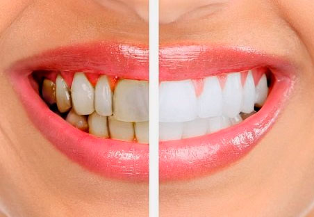

Tratamiento de Periodoncia: Mantén tu Sonrisa y Salud Dental en Equilibrio
La periodoncia es un campo especializado de la odontología que se enfoca en el diagnóstico, prevención y tratamiento de enfermedades de las encías y los tejidos que rodean y sostienen los dientes. En nuestra clínica, comprendemos la importancia de mantener la salud periodontal para conservar una sonrisa radiante y una buena salud bucal en general.
Proceso de Tratamiento de Periodoncia:
La periodoncia implica una variedad de procedimientos diseñados para abordar diferentes aspectos de la salud de las encías y los tejidos periodontales:
- Evaluación Completa:
- Limpieza Profunda (Raspado y Alisado Radicular):
- Tratamiento de Bolsas Periodontales:
- Educación y Mantenimiento:
Comenzamos con una evaluación exhaustiva de la salud periodontal de cada paciente. Esto puede incluir la medición de la profundidad de las bolsas periodontales, la evaluación de la cantidad de encía adherida y la detección de signos de inflamación o infección.
En casos de acumulación de placa y sarro debajo de la línea de las encías, realizamos un raspado y alisado radicular para eliminar estas acumulaciones y suavizar las superficies de las raíces dentales. Esto ayuda a eliminar las bacterias causantes de la enfermedad periodontal y a promover la curación de los tejidos.
Para casos más avanzados de enfermedad periodontal, podemos realizar procedimientos adicionales para tratar las bolsas periodontales profundas y restaurar la salud de los tejidos periodontales. Estos pueden incluir terapia con antibióticos locales o cirugía periodontal para acceder y limpiar más profundamente las áreas afectadas.
Durante todo el proceso de tratamiento, proporcionamos educación sobre la importancia de una buena higiene bucal en el hogar y el mantenimiento regular de la salud periodontal. Esto incluye técnicas de cepillado y uso de hilo dental adecuadas, así como recomendaciones personalizadas para el cuidado bucal.
En nuestra clínica, nos comprometemos a brindar un tratamiento de periodoncia compasivo y efectivo para cada paciente. Nuestro objetivo es ayudarte a mantener tus encías y dientes saludables para una sonrisa que perdure toda la vida. ¡No dejes que la enfermedad periodontal afecte tu bienestar bucal! ¡Contáctanos hoy mismo para programar una consulta y dar el primer paso hacia una salud periodontal óptima!
